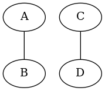
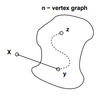
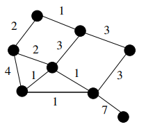
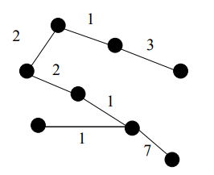

Build Up Error¶
Recall a graph is connected iff there is a path between every pair of its vertices.
False Claim. If every vertex in a graph has positive degree, then the graph is connected.
Prove that this Claim is indeed false by providing a counterexample
All nodes have a degree of 1, but there is no path from A or B to C or D.
Since the Claim is false, there must be a logical mistake in the following bogus proof. Pinpoint the first logical mistake (unjustified step) in the proof.
Proof. We prove the Claim above by induction. Let P(n) be the proposition that if every vertex in an n-vertex graph has positive degree, then the graph is connected.
Base cases: (\(n \le 2\)). In a graph with 1 vertex, that vertex cannot have positive degree, so P(1) holds vacuously.
P(2) holds because there is only one graph with two vertices of positive degree, namely, the graph with an edge between the vertices, and this graph is connected.
Inductive step: We must show that \(P(n)\) implies \(P(n + 1)\) for all \(n \ge 2\). Consider an n-vertex graph in which every vertex has positive degree. By the assumption P(n), this graph is connected; that is, there is a path between every pair of vertices. Now we add one more vertex x to obtain an (n + 1)-vertex graph:
All that remains is to check that there is a path from x to every other vertex z. Since x has positive degree, there is an edge from x to some other vertex, y. Thus, we can obtain a path from x to z by going from x to y and then following the path from y to z. This proves P(n + 1).
By the principle of induction, P(n) is true for all \(n \ge 0\), which proves the Claim. \(\square\)
The error is in the base cases. P(1) asserts that the vertex cannot have a positive degree, so holds vacuously. But it does not, because there are no paths between every node in the graph (there are no paths at all!)
The second error could be that P(2) holds because it just so happens to be an n-complete graph at that point, because 1 edge is required for a 2-node graph.
This is related to the real issue where they conclude P(n + 1) have been proven. P(n + 1) must be true for every (n + 1)-node graph, not just one built up from an n-node connected graph.
The Grow Algorithm¶
Yesterday in lecture, we saw the following algorithm for constructing a minimum-weight spanning tree (MST) from an edge-weighted N-vertex graph G.
ALG-GROW:
Label the edges of the graph \(e_1, e_2, \dots , e_t \text{ so that } w_t(e_1) \le w_t(e_2) \dots \le w_t(e_t)\).
Let S be the empty set.
For \(i = 1 \dots t\), if \(S \cup \{e_i\}\) does not contain a cycle, then extend S with the edge \(e_i\).
Output S.
In summary, ALG-GROW selects edges one at a time, always choosing the minimum weight edge that does not create a cycle with previously selected edges. Notice that as edges are added S may not be connected. When the algorithm terminates, S contains N −1 edges. If it is connected, then it is a spanning tree. Consider, for example, the following edge-weighted graph.
Now suppose we run ALG-GROW on our graph. We may choose the weight 1 edge on the bottom of the triangle of weight 1 edges in our graph. In the next step, we may choose the weight 1 edge on the top of the graph. Note that this edge still has minimum weight, and does not cause us to form a cycle, so ALG-GROW can choose it. We will then choose one of the remaining weight 1 edges. Note that neither causes us to form a cycle. Continuing the algorithm, we may end up with the same spanning tree shown below
In this recitation, we will analyze ALG-GROW.
Analysis of ALG-GROW¶
In this problem you may assume the following lemma from the problem set:
Lemma 1. Suppose that \(T = (V, E)\) is a simple, connected graph. Then T is a tree iff \(|E| = |V | − 1\).
In this exercise you will prove the following theorem.
Theorem. For any connected, weighted graph G, ALG-GROW produces an MST of G.
Prove the following lemma.
Lemma 2. Let \(T = (V, E)\) be a tree and let e be an edge not in E. Then, \(G = (V, E \cup \{e\}\)) contains a cycle.
(Hint: Suppose G does not contain a cycle. Is G a tree?)
Proof. By contradiction. Suppose G does not contain a cycle. Then the edge, e, added to T, must be incident to two nodes, \(x,y \in V\) that were not previously connected. However, since G is a tree, by definition it is connected, meaning there is already a path from \(x—...—y\). Adding a new edge directly from x to y would create a cycle \(x—...—y—x\). This a contradiction, so we can conclude that G contains a cycle.
Prove the following lemma.
Lemma 3. Let \(T = (V, E)\) be a spanning tree of G and let e be an edge not in E. Then there exists an edge \(e' \ne e\) in E such that \(T∗ = (V, E − \{e'\} \cup \{e\})\) is a spanning tree of G.
(Hint: Adding e to E introduces a cycle in \((V, E \cup \{e\})\).)
By Lemma 2, we know \(E \cup e\) contains a cycle. Therefore when we remove \(e'\) there are two options; Case 1: There is still a cycle. But then the edges must be a subset of E. And the edges in E form the tree T, so this cannot happen. Case 2: There is no longer a cycle. So the cycle contained e and \(e'\). Removing an edge from a cycle means all the nodes are still connected in the other direction.
Since T* contains all the same nodes at T, it is also a spanning tree of G.
Prove the following lemma.
Lemma 4. Let \(T = (V, E)\) be a spanning tree of G, let e be an edge not in E and let \(S \subseteq E\) such that \(S \cup \{e\}\) does not contain a cycle. Then there exists an edge \(e' \ne e\) in \(E − S\) such that \(T∗ = (V, E − \{e'\} \cup \{e\})\) is a spanning tree of G.
(Hint: Modify your proof to part (b). Of all possible edges \(e' \ne e\) that can be removed to construct T∗, at least one is not in S.)
We know that \(E \cup e\) contains a cycle. Since \(S \cup \{e\}\) doesn’t contain a cycle, we can conclude that \(1 \ge |S| < |E|\) edges and \(e' \ni S\). We can prove this by contradiction. Suppose that all the edges \(\ne e\) in the cycle of \(E \cup e\) are in S. The S must contain a cycle, but this contradicts the assumptions.
Prove the following lemma.
Lemma 5. Define \(S_m\) to be the set consisting of the first m edges selected by ALGGROW from a connected graph G. Let \(P(m)\) be the predicate that if \(m \le |V|\) then \(S_m \subseteq E\) for some MST \(T = (V, E)\) of G. Then \(\forall m. P(m)\).
(Hint: Use induction. There are two cases: \(m + 1 > |V| \text{ and } m + 1 \le |V|\). In the second case, there are two subcases.)
Theorem P(m) as defined above
Base Case: We must show P(0). Since we’re on the 0th step, no edges have been chosen yet. So \(S_m = \emptyset\), which is trivally true.
Inductive Step: We must show P(n+1) assuming P(n).
When we add the \((n+1)^{th}\) edge, there are two cases;
Case 1: If \(m > |V|\) then \(m \ge |V|\). This means every node is connected already by \(S_m\). By P(m) we already know \(T* = (V, S_m)\) is a minimum spanning tree of G. By Lemma 2 we know that adding any new edge to a tree results in a cycle. However by the algorithm, we only add an edge if it doesn’t result in a cycle. So the \((n+1)^{th}\) edge is not added to \(S_m\), keeping \(S_m\) a subset of E.
Case 2: If \(m + 1 \le |V|\) then \(m < |V|\). By P(m) we know \(S_m \subseteq E\). Let e denote the \((n+1)^{th}\) edge. There are now two subcases,
First, \(e \in E\), in which case \(S_{m+1} \in E\) so P(m+1) holds.
Second, \(e \ni E\). By the description of ALG-GROW, if e is not in the final set of edges E, it’s because \(S_m \cup e\) would result in a cycle. So e is not added to \(S_m\) and \(S_m\) remains a subset of E.
However, assuming \(S_m \cup e\) does not contain a cycle, by Lemma 4 there exists an edge \(e'\) in the remaining edges of E (\(E - S_m\)) such that swapping out \(e'\) for \(e\) in T will give us a spanning tree \(T** = (V, E - \{e'\} \cup \{e\})\) for G.
We must therefore prove that because \(weight(e) \le weight(e')\).
Note
This really confuses me. If e weighs less than \(e'\), and adding it to \(S_m\) doesn’t result in a cycle, why didn’t we add it to \(S_m\) (and by extension, why isn’t e in E?)
Prove the theorem.
(Hint: Lemma 5 says there exists an MST \(T = (V, E)\) for G such that \(S \subseteq E\). Use contradiction to rule out the case in which S is a proper subset of E.)
Suppose that \(S \ne E\). Then there exists at least one edge, e, in \(E - S\). Since the edges in E are the edges of a tree, \(S \cup e \subseteq E\) does not contain a cycle. But then ALG-GROW would have added it to S, so e must be in S. Which contradicts \(e \in E - S\)